Catalogue
Course Notes
CSC3060
- CSC3060 Notes — Core lecture notes
- CSC3060 CSAPP Reference — Supplementary notes based on Computer Systems: A Programmer's Perspective
CSC4303
- CSC4303 Notes — Core lecture notes
DDA3020
- DDA3020 Notes — Core lecture notes
CSC3060 Introduction to Computer Systems
-
Textbook Computer Systems A Programmer’s Perspective, 3e, INTERNATIONAL EDITION written by Randal Bryant and David R. O'Hallaron.
-
Reference book Computer Organization and Design: The Hardware/Software Interface (RISC-V Edition) written by David A. Patterson and John L. Hennessy.
Chapter 1 A Tour of Computer System
Compilation System
Take C language as an example linux > gcc hello.c -o hello.
- Pre-processor (cpp) Handles include/define, strips off comments and conditional compilation #ifdef
- Compiler (cc1) Scan/parse/semantic check/code gen/opt
- Assembler (as) From assembly to machine code
- Linker (ld) Relocation & reference resolution
Hardware Organization of a System
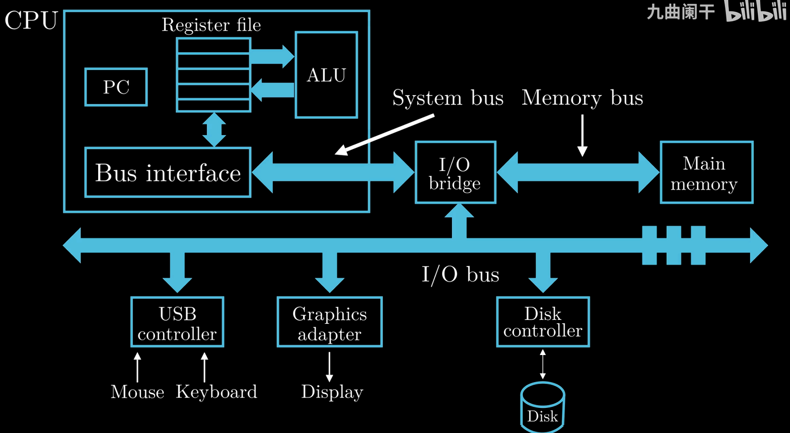
DMA (Direct Memory Access) is usually used for high-spped and bulk data transfers, controlled by system programmers.
-
System Bus
Transfer data in fixed-size blocks called words (4/8 bytes on a 32/64 bit system)
Memory Hierarchy
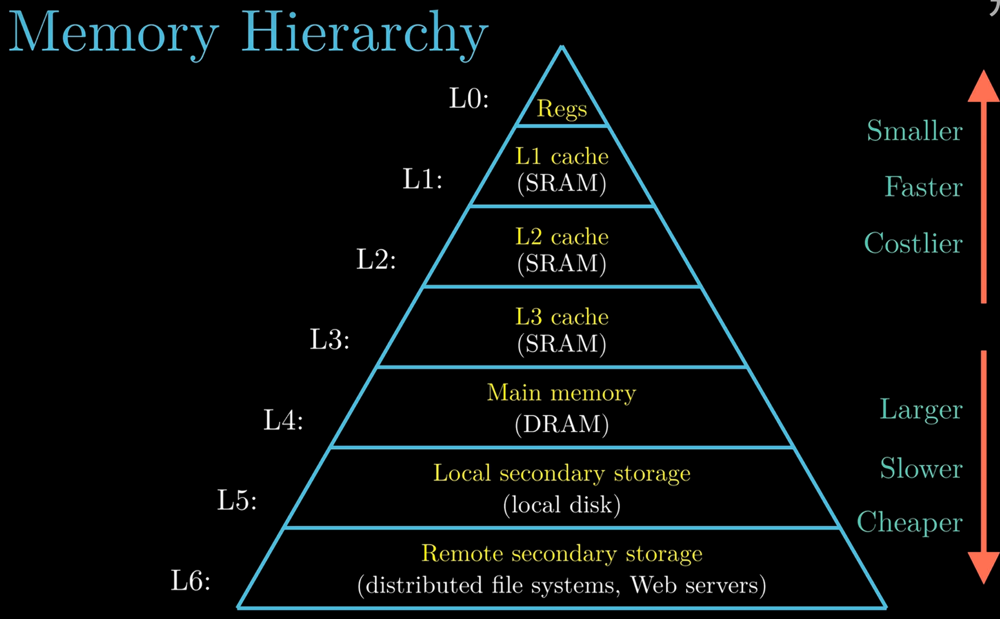
The localities of cache: Temporal Locality & Spatial Locality.
Abstractions in Computer Systems (Virtualization)
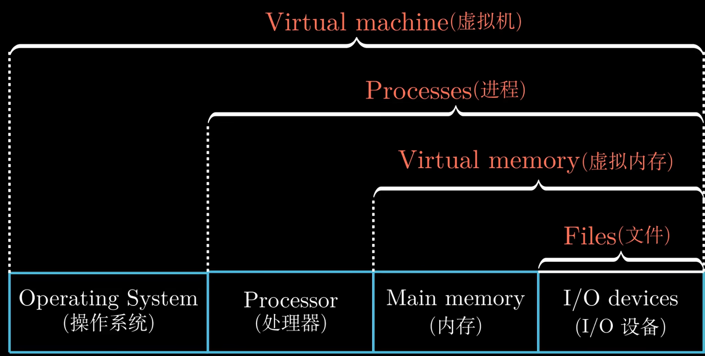
Virtualization is often related to multiplicity, fake versions, and sharing.
-
Process & Thread
Multiple processes can run concurrently on the same system, and each process appears to have exclusive use of the hardware.
Context switching with OS Kernel.
A process can actually consist of multiple execution units, called threads. Threads shares the same code and global data.
-
Virtual Memory
Program Code & Data, Shared Libraries, Heap, Stack, Kernel Virtual Memory from bottom to top.
-
Virtual address space canve greater than the physical memory.
-
Memory serves as a cache for virtaul memory.
-
Support multiprogramming.
-
Allow multiple processes to share data.
-
-
File
Import Themes
Amdahl's Law (Quantifying the performance improvement ceiling)
Concurrency and Parallelism
-
Concurrency It refers to the general concept of a system having multiple, simultaneous activities, which do not necessarily execute at the same time, but may interleave in time to create the logical impression of simultaneity.
-
Parallelism It refers to the use of concureency to make a system run faster.
ILP and DLP
-
Instruction-Level e.g. Parallelism pipelining, superscalar, out-of-order execution.
-
Data-Level Parallelism e.g. Single Insruction Multiple Data (SIMD), Vector instructions.
Computer Architecture
Computer Architecture (e.g. Intel x86, IBM 360, ARM, RISC-V) is the interface between hardware and software, it includes ISA and Microarchitectures (e.g. Different implementations of the same ISA: Single cycle, Multi-cycle, Pipelined, Superscalar, Out-Of-Order, Speculative Execution, Cache Hierarchies, and Various Predictions).
Chapter 2 Representing and Manipulating Information
Information Storage
-
Words
word size virtual address space
-
Addressing and Byte Ordering
Big endian (e.g. IBM Mainframes) & Little endian (e.g. Intel x86, ARM, RISC-V).
Big-endian means most significant byte first, and Little-endian means least significant byte first.
Integer Representaions
Sizes of Data Type in C/C++
| Signed | Unsigned | 32-bit (Bytes) | 64-bit (Bytes) |
|---|---|---|---|
| 1 | 1 | ||
| 2 | 2 | ||
| 4 | 4 | ||
| 4 | 4 | ||
| 8 | 8 | ||
| — | |||
| — | 4 | 4 | |
| — | 8 | 8 |
Unsigned Encodings
Suppose a vector , then
Two's Complement Encodings
Inverse form (1's Complement) For a negative number, keep the signed the same and invert the rest.
two zero exits & end-round carry out issues (hte end carry-out bit needs to add back to the LSB)
2's Complement For a negative number, keep the sign the same, invert the rest and add 1.
Suppose a vector , then
Conversions between Signed and Unsigned
For a -bit 2's complemetn signed binary numeral system:
- Minimum , corresponding to binary (A special case that does not satisfy the invert bits and add 1 rule used for other negative numbers).
- Maximum , corresponding to binary .
Sign Extension
Small to Big
-
Zero extension of unsigned numbers
-
Sign extension of two's complement numbers
Since , by induction, we can proof it.
Big to Small
Integer Arithmetic
Addition
Additive Inverse
-
For two numbers A, B, the overflow occurs when
(NOT (sign_A XOR sign_B)) AND (sign_A XOR new_sign) == 1. (Two operands have the same sign but the result has a different sign.) -
One Bit Full Adder
-
Carry Lookahead Adder
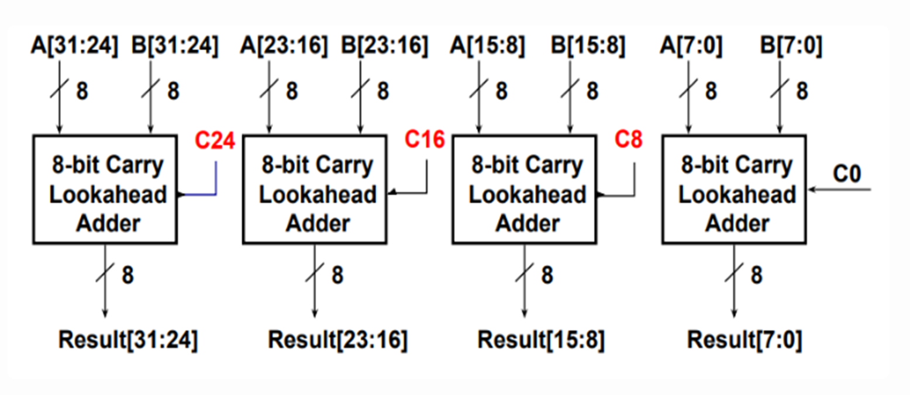
Multipilication
Division (by a power of 2)
Unsigned numbers use logical shift, while two's complement numbers use arithmetic shift to achieve sign-preserving extension.
Right shift performs integer division by powers of two :
Floating Point
Floating-Point Representation
s (sign) : The number is positive () or negative ().
M (fraction) : A binary fraction.
E (exponent) : weight.
()
| Category | Exponent | Fraction | Value Formula |
|---|---|---|---|
| Normalized | any | ||
| Denormalized | |||
| Zero | |||
| Infinity | |||
| NaN (Not a Number) | NaN |
When interpreted as signed integers, the bit representation of IEEE 754 floating-point numbers (excluding NaN) preserves the same sorting order.
Comparison (postive number)
| Format | Minimum | Maximum |
|---|---|---|
| Single Precision Normalized | | |
| Single Precision Denormalized | | |
Rounding
| Round-down | Round-up | Round-toward-zero | Round-to-even |
|---|---|---|---|
Non-midpoint round to the nearest representable value Midpoint choose the one |
Floating Point Operations
-
Lack of Associativity & Lack of Distributivity
Example Questions
Let are of type
int,float,double(Their values are arbitrary, except that neither nor equals , , or .). Then:x == (int)(double) xTruex == (int)(float) xFalse (e.g. )d == (double)(float) dFalse (e.g. )f == (float)(double) fTrued*d >= 0.0True
-
Float Point Addition
- Align decimal points (small to big)
- Add significands
- Normalize
- Round and renormalize if needed
Example
Precision (IEEE 754-2008 Standard Formats)
| Format | Sign Bits | Exponent Bits | Mantissa Bits |
|---|---|---|---|
| Quad precision | 1 | 15 | 112 |
| Double precision | 1 | 11 | 52 |
| Single precision (FP32) | 1 | 8 | 23 |
| Half precision (FP16) | 1 | 5 | 10 |
bfloat16
- The format is 1 sign, 8 exponent, 7 mantissa bits, Same exponent range as FP32.
- AI/LLM is based on predictions, approximation does not require high precision.Therefore reduced precision is acceptable for AI.
- Lower precision format enables higher memory bandwidth and computational. bandwidth.
FMA/FMAC
Fused Multiply and Add (FMA) or Fused Multiply and Accumulate (FMAC) combines multiply and add in one instruction ().
- Multiplication and addition are parallel.
- Normalization and rounding are combined at the end.
Use -mfma -ffp-contract=fast to enable FMA.
Chapter 3 Machine-Level Representation of Programs
Machine-Level Representation of Programs
RISC [optimized for processor speed]
Principles
- Simplicity favors regularity
- Smaller is faster
- Make common cases fast
- Good design demands good compromises
[RSA should be scalable, flexible, and extensible.]
Variants of RV
- RV32, RV64, RV128 Different data widths (addressing capability)
| Extension | Description |
|---|---|
| I | Base integer instructions |
| E | Base for embedded systems (e.g., only 16 registers) |
| M | Integer multiplication and division |
| A | Atomic memory instructions |
| C | Compressed extension (16-bit instructions) |
| F | Single-precision floating point |
| D | Double-precision floating point |
| V | Vector extension |
Instruction Types in RV32I
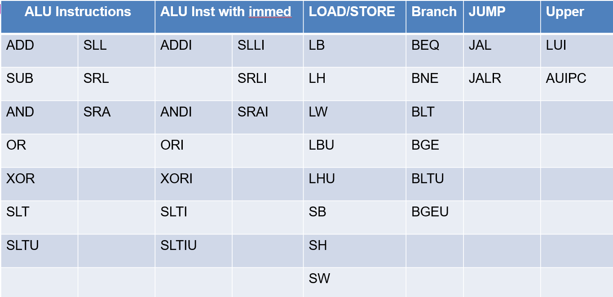
| Types | Instructions |
|---|---|
| ALU | add, sub, and, or, xor, slt, sltu, sll, srl, sra, and all with immediate (No subi in RV32I) |
| Control Instructions | beq, bne, blt, bge, bltu, bgeu, jal, jalr |
| Memory Instructions | lw (No lwu in RV32I), lh, lb, sw, sh, sb, lbu, lhu |
| Privileged Instructions | Interrupt, Memory Management, System Calls, Control and Status Registers (CSR), Mode Change |
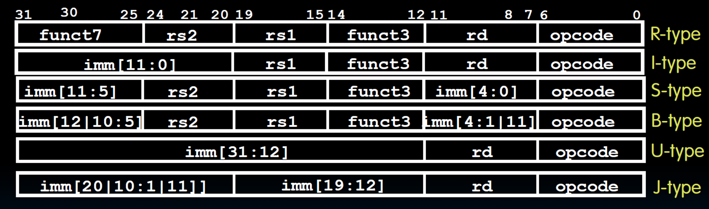
| Format | Name | Instructions |
|---|---|---|
| R-type | Register | add, sub, sll, srl, sra, xor, or, and |
| I-type | Immediate | addi, slli, srli, srai, xori, ori, andi |
| I-type | Load | lb, lh, lw, lbu, lhu |
| I-type | Jump and Link Register | jalr |
| S-type | Store | sb, sh, sw |
| B-type | Branch | beq, bne, blt, bge, bltu, bgeu |
| U-type | Upper Immediate | lui, auipc |
| UJ-type | Unconditional Jump | jal |
-
Three operand instruction format.
-
X0 is always zero.
-
32 means Address cability/Integer register length.
-
Immediate
- type No immediate.
- type 12 bits immediate. Shift instructions are I-type but repurpose the immediate field as a 5-bit shift amount for RV32I (6-bit for RV64I).
inst[30]distinguishes arithmetic from logical right shift, whileinst[31:26]are fixed to zero exceptinst[30](Range: ). The immediate in the branch instruction is an offset relative to PC. - type The 12‑bit immediate is split into high 7 bits (immediate) and low 5 bits (immed) (maintain regularity). The immediate in the store instruction is an offset relative to
rs1. - type 20 bits immediate.
-
Jump
-
jal- , (Jumps are 2-byte aligned, so last bit is implicit zero).
- Range: .
- Beyond 1MB: Use AUIPC + JALR.
-
jalr- , ( clears LSB to ensure 2‑byte alignment).
-
-
Load and Store
lw rd, offset (rs1)means load data from memory and write intord.sw rs2, offset (rs1)means store data from registerrs2into memory. -
LUI loads a 20‑bit immediate into the upper bits of a register; AUIPC adds a 20‑bit immediate to the current PC for position‑independent addressing.
How to load a 32b const into a register?
- Use a LW instruction (cost more)
luiandaddi(When the lower 12 bits of a 32‑bit constant are ,addisign‑extends them, causing an incorrect result. The assembler automatically adjusts the upper 20 bits when using thelipseudo‑instruction.) (Range: )
Instruction Encoding List
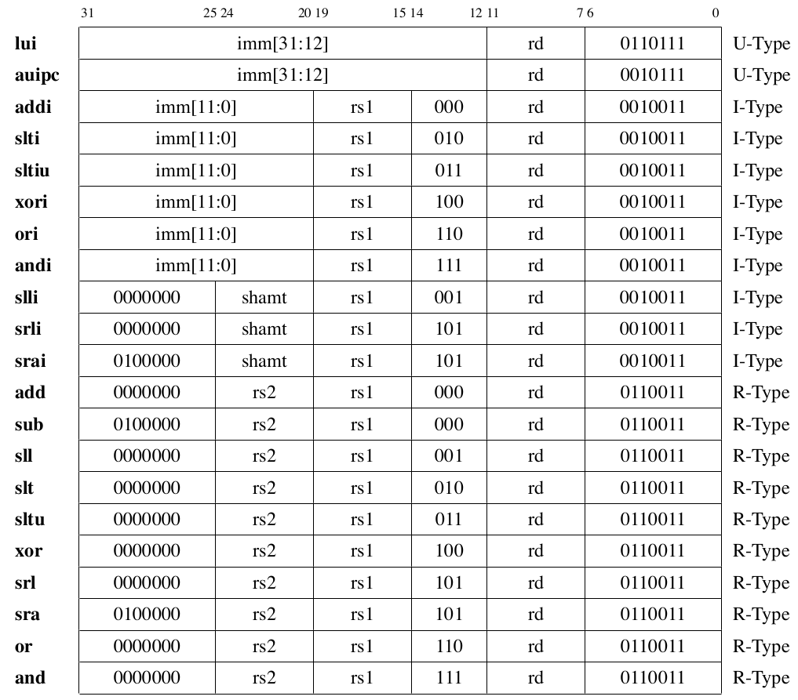
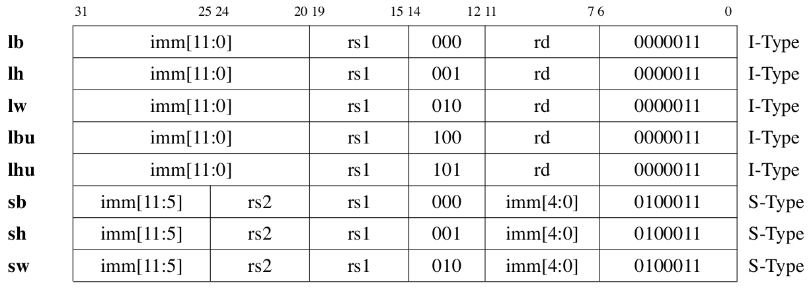
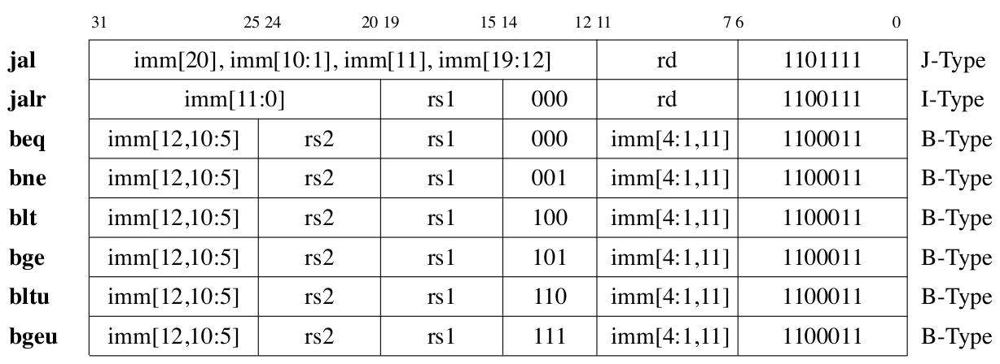
Regularity
| Field | Bit Position | Note |
|---|---|---|
| Opcode | Always opcode | |
| rd | Destination reg | |
| rs1 | Source reg 1 | |
| rs2 | Source reg 2 | |
| Length | - | Fixed 16/32 bit |
| Immediate | High bits | Uses rd field for branch/store |
Pseudo Instrcution
| Pseudoinstruction | Actual Instruction Sequence | Operation |
|---|---|---|
nop | addi x0, x0, 0 | No operation |
li rd, imm | lui rd, imm[31:12] + imm[11]addi rd, rd, imm[11:0] | Load 32-bit immediate |
mv rd, rs | addi rd, rs, 0 | Copy register |
not rd, rs | xori rd, rs, -1 | Bitwise NOT |
neg rd, rs | sub rd, x0, rs | Two's complement negation |
seqz rd, rs | sltiu rd, rs, 1 | Set if |
snez rd, rs | sltu rd, x0, rs | Set if |
sltz rd, rs | slt rd, rs, x0 | Set if |
sgtz rd, rs | slt rd, x0, rs | Set if |
beqz rs, offset | beq rs, x0, offset | Branch if |
bnez rs, offset | bne rs, x0, offset | Branch if |
blez rs, offset | bge x0, rs, offset | Branch if |
bgez rs, offset | bge rs, x0, offset | Branch if |
bltz rs, offset | blt rs, x0, offset | Branch if |
bgtz rs, offset | blt x0, rs, offset | Branch if |
bgt rs, rt, offset | blt rt, rs, offset | Branch if |
ble rs, rt, offset | bge rt, rs, offset | Branch if |
bgtu rs, rt, offset | bltu rt, rs, offset | Branch if unsigned |
bleu rs, rt, offset | bgeu rt, rs, offset | Branch if unsigned |
j offset | jal x0, offset | Unconditional jump |
jal offset | jal x1, offset | Jump and link (return address in x1) |
jr rs | jalr x0, 0(rs) | Jump to address in rs |
jalr rs | jalr x1, 0(rs) | Jump and link to address in rs |
ret | jalr x0, 0(x1) | Return from subroutine |
call offset | auipc x1, offset[31:12] + offset[11]jalr x1, offset[11:0](x1) | Far call to subroutine |
Why do RISC-V loads/stores use base+immediate instead of base+index?
- Simpler hardware Adding scaling to load instructions requires a shifter and complicates the address calculation datapath, increasing cost and cycle time.
- ISA regularity violation Three operands
(rs1, rs2, rd)would force an R‑type format, but R‑type is reserved for ALU operations only. Mixing in memory access would break the clean encoding scheme. - Compiler can optimize it away In loops, the compiler just increments the base register by the element size each iteration, making scaled indexing unnecessary.
Why do RISC-V instructions place immediate bits in seemingly "random" positions (e.g., B-Type and J-Type)?
- Fixed sign bit at position 31 across all formats.
- Decoder reuse (B-Type reuses S-Type logic, J-Type reuses U-Type logic).
- Fixed register fields (
rs1,rs2,rd) across formats.
Application Binary Interface (ABI)
It is based on three key components : the computer ISA, the OS, and the calling convention. ABI incompatibility will occur due to differences between operating systems.
Data Alignment
-
No cache line crossing; no double TLB (Translation Lookaside Buffer) misses; no double page faults come from a single memory instruction execution.
-
Better cache line utilization.
RISC-I to RISC-V do not explicitly enforce data alignments. But their compilers often enforce data alignments.
Crossing a boundary makes the memory reference difficult to handle. The hardware needs to go through two exceptions instead of one.
Padding Rule
- Internal Padding Every member must start at an address that is a multiple of its own alignment requirement.
- Trailing Padding The total size of the struct must be a multiple of the largest alignment requirement among its members.
Exercise
struct S1 {
int white;
long long count;
char c;
int red;
int blue;
} A[];
Suppose is an array of structure , and the starting address of is stored in register . what instruction should be used to access A[100].red?
| Member | Size | Start | Padding | End | Reason |
|---|---|---|---|---|---|
white | int aligns at | ||||
count | needs 8-byte align, pad to | ||||
c | char aligns at | ||||
red | needs 4-byte align, pad to | ||||
blue | int aligns at |
Current size is . Largest alignment in struct is , is not a multiple of , so pad bytes at the end. Total struct size is bytes.
A[100].red : , so the answer is LW X2, 3220(X1).
Stack / Frame Alignments
- Defined by ABI (e.g., RISC‑V psABI: 16‑byte)
- CRT aligns
spbeforemain ()
Compiler Reordering
-
Independent Variables (Rearrangement Allowed)
-
Struct Fields (Rearrangement Forbidden)
- Binary compatibility
- Pointer arithmetic
- Interoperability
PC-relative Addressing
Branch instructions use PC‑relative addressing with a 12‑bit signed offset (in 2‑byte units). Since branch targets are always multiples of 2, encoding in 2‑byte units doubles the reachable range without losing information.
CSR
| Name | Abbreviation | Description |
|---|---|---|
| Machine Trap-Vector Base-Address Register | mtvec | Exception handler entry address |
| Machine Status Register | mstatus | Global interrupt enable (MIE) and status |
| Machine Cause Register | mcause | Reason of last exception/interrupt |
| Machine Exception Program Counter | mepc | Saves PC when exception occurs |
| Machine Interrupt Enable Register | mie | Enables specific interrupt sources |
| Machine Interrupt Pending Register | mip | Shows pending interrupts |
Exception Handling
- Save context Save current PC value to
mepcregister - Update status Update
mstatus, disable further interrupts (clear MIE bit) to prevent nesting - Set cause Write exception/interrupt reason to
mcause - Jump to handler Jump to exception handler entry point based on
mtvecconfiguration
Frame Pointer (fp)/Stack Pointer (sp)
- sp points to the top of stack.
- fp points to a fixed location within the current stack frame, typically the address where the old fp is stored.
- When the function returns, the saved old fp is restored to the fp register, making fp point back to the caller's stack frame.
Calling Convention
| RV Registers | ABI Name | Caller/Callee | Purpose |
|---|---|---|---|
| x0 | zero | — | Always zero |
| x1 | ra | Caller | Return address |
| x2 | sp | Callee | Stack pointer |
| x3 | gp | — | Global pointer |
| x4 | tp | — | Thread pointer |
| x5–x7 | t0–t2 | Caller | Temporary registers |
| x8 | s0 / fp | Callee | Saved register / Frame pointer |
| x9 | s1 | Callee | Saved register |
| x10–x11 | a0–a1 | Caller | Arguments / Return values |
| x12–x17 | a2–a7 | Caller | Arguments |
| x18–x27 | s2–s11 | Callee | Saved registers |
| x28–x31 | t3–t6 | Caller | Temporary registers |
- Caller-Saved Caller decides whether to save based on whether the value will be used after the call.
- Callee-Saved Callee must always save these registers before using them and restore them before returning (absolutely safe).
| Aspect | Caller-Saved | Callee-Saved |
|---|---|---|
| Decision maker | Caller | Callee |
| Mandatory | On demand (only if value is needed after the call) | Yes |
| Save timing | Before calling a subroutine | At function entry |
| Restore timing | After subroutine returns | Before function returns |
Why caller registers are allocated to temporaries?
Temporaries are short-lived and do not need to survive across function calls. Placing them in caller‑save registers avoids unnecessary save/restore code.Why callee registers are allocated to local variables?
Local variables live across function calls. Using callee registers ensures they are preserved automatically by the callee, avoiding repeated saves at each call site.Why callee registers are allocated to CSEs (Common Sub-Expressions)?
Local variables and CSEs are tend to live longer (may be as long as the procedure invocation).CISC [optimized for compact code size]
Chapter 4 Processor Architecture & Logic Design
Logic Designs
Major components
- Combinational element
- State (Sequential) elements , cannot write to register (B-type and S-type).
- Clock signals
What is the difference between combinational logic and sequential logic?
The former one is stateless, output purely depends on the inputs (e.g. ALU). The latter one has states, output depends on the inputs and the states (e.g. register).
The propagation delay of a combinational circuit is determined by the delay of the critical path, which is the longest path of logic gates from any input to any output.
Processor
Core
Data Path (Data Flow)
e.g. ALU, Register, Memory interface, Buses.
Control (Instruction Flow)
e.g. PC, Instruction fetch, and Control signal generation.
RV32I Data Path and Control
- Memory reference instrutions
lw,sw - Arithmetic/logical instrutions
add,sub,and,or - Control flow instruction
beq,jal
Instruction Execution Cycle
Cycle
-
Three Stages
- Fetch Use the PC to supply the instruction address and fetch the instruction from memory.
- Decode Decode the instruction (and read registers).
- Execute
- Use ALU to calculate (Arithmetic result & Memory address for load/store & branch target address)
- Access data memory for load/store
- Update PC (target address or PC + 4 (next word) or PC + 2 (if using compressed instructions RV32IC))
-
Multi-cycle Instructions are broken down into multiple steps, each taking one clock cycle.
Time
CPU time is determined by the following:
Program execution time is determined by the following:
- CISC machines Lower instruction count, higher CPI, longer cycle time
- RISC machines Higher instruction count, lower CPI, shorter cycle time
Abstract View of RV32I Subset
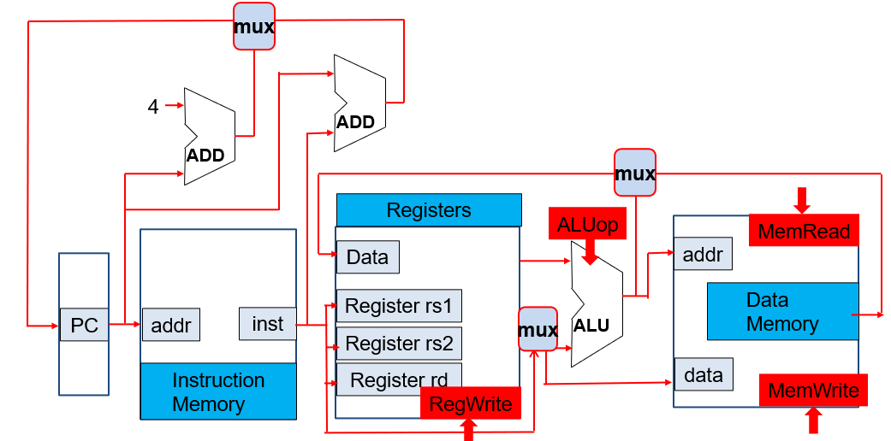
How to select between PC+4 and PC+immediate?
If a branch is taken or a jal instruction, select pc+immed. Otherwise select PC+4.
Note that jal and jalr use pc + imm as the target address, while writing pc + 4 back to the register. In contrast, auipc writes pc + imm directly back to the register.
How to select data from the memory or the ALU?
If load select Mem. If R-type select ALU.
How to select data from Immediate or reg[rs2]?
If R-type select rs2. If I-type select immed.
Processor Designs
-
Analyze the requirements
-
Data Path Requirements selections
-
Combinational Components Adder & MUX & ALU (An adder only does addition (e.g., PC+4). An ALU includes an adder but also performs many other arithmetic/logic operations.)
-
Sequential Components
Register -bit storage with Write Enable control. Updates only at clock tick if .
Register File consists of 32 registers with two read ports (rs1/rs2) and one write port (rd).
Memory. Read (): Address → Data Out. Write (): Next clock tick, Data In → Address.
-
Assemble
-
Instruction Fetch Unit Fetch the instruction and Update the program counter.
-
Branch Operations Using ALU subtraction for branches risks overflow corrupting the sign, so RISC-V processors internally use flags (overflow and carry) or dedicated comparators for correct branch decisions without hardware traps.
-
Add and Subtract
R[rd] <- R[rs1] op R[rs2] -
Load/Store Operations A single ALU and register file need two multiplexers: one for ALU's second input (e.g.
add rd, rs1, rs2andaddi rd, rs1, imm), another for register file's write data source (e.g.add x3, x1, x2from ALU andlw x3, 8(x1)from memory).
-
-
Control Points and Signals
Control Signal Description Expression PCsrcSelect the next PC value
PC + 4 []
Branch / jump target address [](Branch or jal/jalr) ? 1 : 0RegWrWrite enable for register file (Branch or Store) ? 0 : 1MemRdEnable signal for reading data memory Load ? 1 : 0MemWrEnable signal for writing data memory Store ? 1 : 0ALUsrcSelect the second ALU input
register []
immediate value []R-type ? 0 : 1ALUctrDetermines the ALU operation / WBselSelects the data written to the register file
memory data []
ALU result []
PC + 4 []Load: 0; R-type : 1; jal/jalr : 2
-
On each clock cycle, the single‑cycle processor executes one instruction. State elements update at the rising edge using combinational logic outputs computed during the cycle.
Control
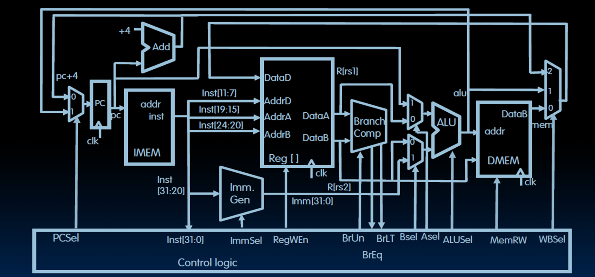
Aselrs1orpc(When usejal, the target isPC + offset.)Bselrs2orimmed.
Why does RV32I still need a dedicated Branch Comparator despite having an ALU?
- Use Branch Comparision to avoid substruction overflow (also faster than subtraction).
- RV32I lacks architectural flags, it requires a dedicated comparator to enable single-cycle compare-and-branch operations by combining comparison and jump logic.
- The ALU at the EXE stage is needed for R-type instructions and Load/Store instructions.
Pipelining
Five Stages
- Instrcution fetch from (instruction) memory
- Instrcution decode & register read
- Execute operation or calculate address
- Access (data) memory operand
- Write the result back to register
| Instructions | Detailed Stages |
|---|---|
R-Type, I-Type, jal, jarl, lui, auipc | (no ) |
| Store, Branch | (no ) |
| Load |
- Throughput increases as more instructions complete per unit time, but single instruction latency (The time it takes for each instruction to be executed.) does not decrease and may even increase.
- Pipeline rate is limited by the slowest stage.
- Potential/ideal speedup = Number of pipeline stages (number of pipeline steps).
- Need to reduce possible fill and drain (e.g., I-cache misses and branch misprediction)
Pipeline-oriented ISA Design
- All instructions are fixed length.
- Few and regular instruction formats.
- Only load/store instructions accessing memory.
- Instructions are simple.
Some principles of designing a pipelined datapath:
- Multi-stage partitioning
- Overlapped execution
- Increased throughput
- Improved resource utilization
Single Cycle & Multi Cycle & Pipeline
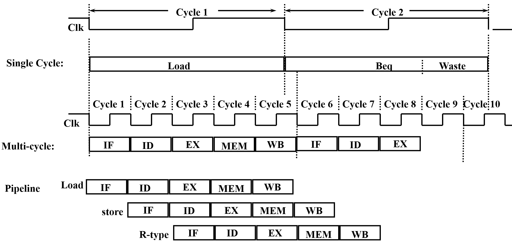
| Implementation | Clock Cycle Time | Instruction Latency | CPI |
|---|---|---|---|
| Single-Cycle | Sum of all stage latencies | 1 Clock Cycle Time | |
| Multi-Cycle | Longest stage latency | CPI Clock Cycle Time | |
| Pipelined | Longest stage latency | Number of Stages Clock Cycle Time | (hazards) |
- Latency The total time required to complete one single instruction from start to finish. (Single-cycle data path actually has shorter instruction latency because of the setup time and propagation delay in pipeline.)
- Throughput The total number of instructions completed per unit of time.
- For superscalar implementation, CPI .
- Single cycle as lower throughput but shorter instruction latency.
- No arithmetic exceptions allow out‑of‑order retirement, avoiding stalls for long‑latency instructions.
Pipline Registers
Without pipeline registers, stages would overwrite each other’s data, causing instruction mix‑ups and loss of control information.
| Pipeline Register | Stored Information |
|---|---|
| IF/ID | PC_ID, inst_ID (instrcution code like opcode) |
| ID/EX | PC_EX, inst_EX, imm_EX, rs1_EX, rs2_EX |
| EX/MEM | PC_MEM, inst_MEM, rs2_MEM, alu_MEM |
| MEM/WB | PC+4_WB (rd = PC + 4), inst_WB, alu_WB, mem_WB |
-
Control signals are derived from instruction bits, that is, after the ID stage.
-
Control information for later stages are also stored in the pipeline registers.
-
Architecture States (visible to the programmer and compiler)
- Registers (general purpose, fp, vector, flags)
- PC
- Memory
It was saved during a context switch:
- user-level switch (e.g. procedure call) saved on the runtime program stack (caller and callee convention).
- system-level switch (e.g. process switch) saved on the Process Control Block (PCB) or the kernel stack.
-
Micro-architecture states (invisible to the programmer)
- Pipelined registers hold transient data between stages for a few cycles.
- Branch predictors
- Caches
- Buffers and Quenes
- Counters
| Stage | Data Path | Control |
|---|---|---|
rs1, rs2 designators | immed_sel | |
rs1, rs2 contents, PC, immed_value | Asel, Bsel, ALUsel | |
ALUout (Address), rs2 contents | MemRW (read/write), BrLt, Breq | |
ALUout, PC+4 (for link reg), MEMout | Wbsel, rd designator, WRen |
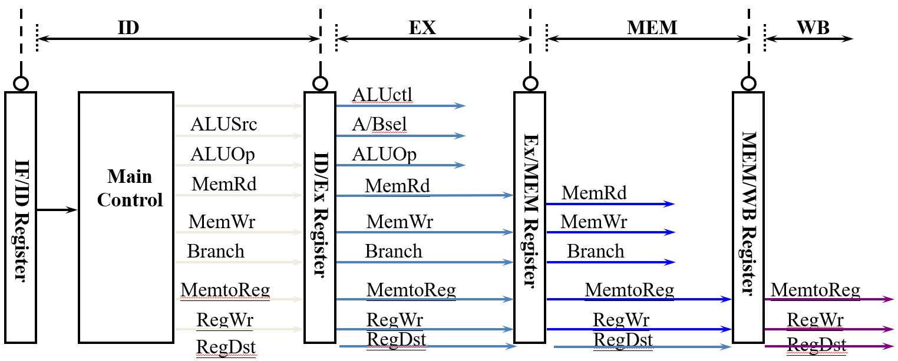
Hazards
Structure Hazards
A conflict arising due to hardware resourece limitations within the pipeline.
-
Pipeline stalls
-
Multiple resources
-
Instruction Reordering
Static scheduling (by compiler) reorders instructions at compile time to avoid hazards, while dynamic scheduling (by hardware) reorders them at runtime based on actual data and resource availability.
-
ISA design
Split Instruction/Data caches can avoid structural hazards in the pipeline and increase the cache access bandwidth.
Data Hazards
A conflict arising because the current instruction depends on the result of a previous instruction that has not yet been computed or written back.
| Scenario | Data Ready Stage | Data Used Stage | Example |
|---|---|---|---|
| Register Access Issues | It bypasses the ALU, read in ID and held until MEM for memory write. | add t0, t1, t2sw t0, 4(t3) | |
| ALU Result Access Issue | add s0, t0, t1 sub t2, s0, t0 | ||
| Load Hazard | lw s1, 4(s0)add t0, s1, t1 |
Solutions
Flow dependence (RAW) is a true data dependence, while anti-dependence (WAR) and output dependence (WAW) are name dependences that can be eliminated by register renaming.
-
Stall pipeline (Interlocking)
-
Data Forwarding (Bypassing)
Add forwarding control logic to make extra connections in the datapath.
Hazard detection compares and destination registers with current instruction’s source registers. (EXE-EXE
EX/MEM.RegRd = ID/EX.RegRs1/2and MEM-EXEMEM/WB.RegRd = ID/EX.RegRs1/2)Forwarding is skipped when
RegWr == 0or when the destination register isx0. -
Compiler Code Transformations
Scheduling (reordering) scope is often limited by branches, indirect branches, and call/ret. Memory aliasing (e.g., and may point to same address) and unknown latencies (e.g. cache hit/miss unpredictable) further restrict reordering. Compiler must conservatively preserve dependencies.
Control Hazards
Control hazards are due to branch instructions (conditional jumps) and JAL/JALR instructions (unconditional jumps).
Condition and Target Address are Ready at the Stage.
Static Branch Prediction (Compile Time)
- Predict a backward branch as taken (loop back branches) and predict a forward branch as fall-through (the compiler always puts the then part in the fall-through path).
- Conditional branch's (e.g.
blt) behavior is entirely program‑dependent and cannot be accurately predicted using simple static rules. However, static prediction can still be effective for special cases likebeq rs1, x0due to common software patterns. - Unconditional branches (e.g.
jal) always jump, static prediction should always predict taken. - The ISA may reserve a bit in branch instructions as a prediction bit.
- When branch prediction is wrong, pipeline flushing is performed.
Dynamic Branch Prediction (Run Time)
-
Branch History Table (BHT) (Branch prediction should occur at the instruction fetch (IF) stage.)
A branch history table stores past outcomes of branches, indexed by address, to predict future behavior and flush on misprediction.
Tag identifies which address occupies a cache slot. BHT omits tags because prediction bits (1–2) are tiny, tags huge (30–46 bits).
- 1-bit Predictor Flips on every misprediction, fails on nested loops.
- 2-bit Predictor Four-state FSM, changes only after two consecutive mispredictions, handles loops better.
-
Correlated Predictor
Global history register selects a 2-bit counter entry in the pattern table. Current PC selects which table to use, separating histories for different branches.
-
The Location Prediction
Branch Type Prediction Mechanism Example Direct branch Branch Target Buffer (BTB), fixed target beq,jalIndirect branch Hard to predict jalr x0, 4(x1)(Return branch, Switch statements and Function pointers)Function return Return Address Stack (RAS) ret
Chapter 6 The Memory Hierarchy
Random Access Memory (RAM)
Access time is the same for all locations.
All unconventional DRAM chips offer much higher bandwidth, but the latency remains the same (The first data still takes the same time to arrive).
| Feature | SRAM | DRAM |
|---|---|---|
| Transistors per bit | ||
| Access time | 1× | 10× |
| Refresh | No | Yes |
| Error Detection and Correction | Optional | Yes |
| Cost | High | Low |
| Main applications | cache memories | main memory, frame buffers |
Static Random Access Memory (SRAM)
Dynamic Random Access Memory (DRAM)
-
Reading DRAM Supercell Select row via RAS, load into buffer. Select column via CAS, output data, then rewrite row to refresh.
-
Memory Modules A 64-bit word is stored across eight DRAM chips in parallel, with each chip providing one byte (8 bits) at the same row and column address.
-
Memory Wall The gap between the speed of processors and the main memory. The bottleneck has shifted from how fast memory can respond (latency) to how much data it can deliver per second (bandwidth).
- Latency
- Reduction local memory, NUMA, PIM (Reduce the waiting time for each visit.)
- Hiding multi-threading/Hyper-threading, WARP interleaving, chip-multithreading (Keep computation units busy.)
- Bandwidth
- Memory bandwidth multi-banks and interleaved memory, SDRAM, HBM
- Communication bandwith wider bus, interconnection network
- Latency
Locality
-
Principle Many Programs tend to use data and instructions with addresses near or equal to those they have used recently.
-
Temporal locality Recently referenced items are likely to be referenced again in the near future.
-
Spatial locality Items with nearby addresses tend to be referenced close together in time.
Memory Hierarchy
| Level Transfer | Staging Unit | Typical Size | Controlled By |
|---|---|---|---|
| Registers ↔ Memory | Instruction Operands | Bits / words (e.g., 32/64 bits) | Compiler (Programmer) |
| Cache / Local Memory ↔ Memory | Blocks / Lines | 64 B (cache line) | Hardware (Cache Controller) / Compiler or Programmer (Local Memory) |
| Memory ↔ Disks | Pages | 4 KB (page) | Hardware & OS (Virtual Memory) / Programmer (Files) |
| Disks ↔ Tapes | Files | Variable (e.g., 64 KB–1 MB) | Hardware / Operator or Programmer |
This gives you Large, Cheap memory, but Fast access.
Caches provide automatic (transparent) data movement, while local memory requires explicit programmer-controlled data management.
Cache
Direct Mapped
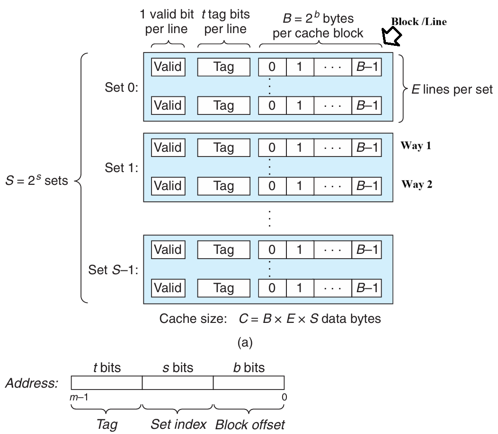
-
Valid Bit
A cache line is invalid (valid bit equals to ) when:
- When a cache line of data has not come back from memory yet
- Cache line is currently being replaced
- Cache is flushed
-
Three Steps
- Set Selection Use the set index as an unsigned binary number to locate the cache set.
- Line Matching Compare the tag to determine if the desired block is present in the set.
- Word Extraction Use the block offset as a binary number to select the appropriate word within the cache line.
Why is the set index typically taken from the middle bits of the address rather than the high bits?
Using high bits as the set index causes consecutive memory blocks to map to the same set, leading to more conflict misses, whereas middle bits distribute blocks across sets to better exploit spatial locality.
Fully Associative
Chapter3
CISC [optimized for compact code size]
Size of Data Type in IA32
| C declaration | Intel data type | Assembly-code suffix | Size (bytes) |
|---|---|---|---|
| Byte | |||
| Word | |||
| Double word | |||
| Quad word | |||
| Quad word | |||
| Single precision | |||
| Double precision |
Register


Operands
-
Immediate
-
Register
-
Memory Reference Immediate & Base Register & Index Register & Scale Factor (1,2,4,8)
| Type | Form | Operator Value | Name |
|---|---|---|---|
| Immediate | Immediate | ||
| Register | Register | ||
| Memory | Scaled Indexed | ||
| Memory | Absolute | ||
| Memory | Indirect | ||
| Memory | Base + Displacement | ||
| Memory | Indexed | ||
| Memory | Indexed | ||
| Memory | Scale Indexed | ||
| Memory | Scale Indexed | ||
| Memory | Scale Indexed |
Operation code
-
Movement
-
[
movb,movw,movl,movq,movabsq]Source operand (Immedita, Register, Memory); Destination operand (Register, Memory)
Two operands of a move instruction cannot both be memory references. (It is necessary to first move the source memory reference into a register, and then move it to the destination memory reference.)
movlwrites 32 bits of data to the lower half and then automatically zero-extends the value into the upper 32 bits. (In x86-64, any instruction that generates a 32-bit result for a register will set the upper 32 bits of that register to zero.)movqcan only be 32 bits (sign-extended to 64 bits), whereasmovabsqcan be 64-bit but the destination must be a register. -
[
movzbw,movzbl,movzwl,movzbq,movzwq]movzlqdoes not exist because ofmovlinstruction. -
[
movsbw,movsbl,movswl,movsbq,movswq,movslq,cltq]cltqsame asmovslq %eax, %rax
-
-
Stack
let a quad number be the example
-
subq $8 %rsp movq %rbq,(%rsp) -
movq (%rsq),%rax addq $8, %rsp
-
Load Effective Address
Computes effective address and stores it in destination register
Unary Operations
| Instructions | Effect |
|---|---|
inc D | |
dec D | |
neg D | |
not D |
Binary Operations
| Instructions | Effect |
|---|---|
add S D | |
sub S D | |
imul S D | |
xor S D | |
or S D | |
and S D |
Shift Operations
| Instructions | Effect |
|---|---|
sal D | |
shl D | |
sar D | Arithmetic Right Shift |
shr D | Logical Right Shift |
Shift instructions can shift by an immediate value, or by a value placed in the single-byte register %cl.
Condition Code
-
Carry Flag [check for overflow in unsigned operations]
-
Zero Flag
-
Sign Flag
-
Overflow Flag
-
Similar to
sub, but it only sets the condition codes without changing the value of the destination register.When
S == D, .It will set the condition codes based on the result of .
-
Similar to
and, but it only sets the condition codes without changing the value of the destination register.When
S & D == 0, .
Set Instructions
| Instruction | Effect | Description |
|---|---|---|
sete D | ||
setne D | ||
sets D | negative | |
setns D | nonnegative | |
setg D | Signed | |
setge D | Signed | |
setl D | Signed | |
setle D | Signed | |
seta D | Unsigned | |
setae D | Unsigned | |
setb D | Unsigned | |
setbe D | Unsigned |
Jump Instructions
| Instruction | Jump Condition | Description |
|---|---|---|
jmp Label | Direct Jump | |
jmp *Operand | Indirect Jump | |
je Label | ||
jne Label | ||
js Label | Negative | |
jns Label | Nonnegative | |
jg Label | Signed | |
jge Label | Signed | |
jl Label | Signed | |
jle Label | Signed | |
ja Label | Unsigned | |
jae Label | Unsigned | |
jb Label | Unsigned | |
jbe Label | Unsigned |
Conditional Move Instructions
| Instruction | Move Condition | Description |
|---|---|---|
cmove S, R | ||
cmovne S, R | ||
cmovs S, R | Negative | |
cmovns S, R | Nonnegative | |
cmovg S, R | Signed | |
cmovge S, R | Signed | |
cmovl S, R | Signed | |
cmovle S, R | Signed | |
cmova S, R | Unsigned | |
cmovae S, R | Unsigned | |
cmovb S, R | Unsigned | |
cmovbe S, R | Unsigned |
Loop
do-while, while, and for loops can be implemented by combining conditional tests and jumps.
Switch
switch is compiled into a jump table. The execution time of the switch statement is irrelevant to the number of cases.
Transfer Control
| Instruction | Description |
|---|---|
call Label | Procedure Call (Direct) |
call *Operand | Procedure Call (Indirect) |
ret | Return from Procedure Call |
Data Transfer
The registers' names depend on the size of the data type being passed.
If a function has more than 6 integer parameters, the additional arguments must be passed on the stack. Note that the argument 7 is located at the top of the stack. All stack-passed arguments are aligned to multiples of 8 bytes.
Pointer
| Expression | Type | Value | Assembly Code |
|---|---|---|---|
E | int* | movq %rdx, %rax | |
E[i] | int | movl (%rdx, %rcx, 4), %eax | |
&E[i] | int* | leaq 8(%rdx, %rcx, 4), %rax | |
&E[i] - E | long | movq %rcx, %rax |
Notes:
-
&E[i] - Eyields typelong(specificallyptrdiff_t) because pointer subtraction returns the number of elements between them as a signed integer. -
int*usesmovq(notmovl) because pointers are 64-bit addresses in x86-64.
Nested Arrays
T D[R][C] , is the size of data type T in bytes.
Struture & Union
Structure
| Types | |
|---|---|
Notes:
-
The address of any K-byte basic object must be a multiple of .
-
The offset of the first member is always 0 in a structure.
-
The compilers probably add some bytes at the end of a structure to ensure that each element in an array of structures could satisfy its alignment requirements.
Union
The total size of a union equals the size of its largest field.
Application
Buffer Overflow
Three protection mechanisms to thwart buffer overflow attacks:
-
Stack Randomization Address-Space Layout Randomization (ASLR)
-
Stack Corruption Detection Place a random canary value between local buffers and critical stack data to detect buffer overflows.
-
Limiting Executable Code Regions
Dynamic Stack Frame
%rbp is base pointer/frame pointer dynamic stack frame
Floating-point Code
Chapter 4 Processor Architecture
Logic Design and Hardware Control Language (HCL)
Logic Gate

CMOS

Process
For Y86-84 :

-
Fetch
- Read instruction bytes from memory using PC:
icode:ifun(instruction specifier)rA, rB(register specifiers)valC(8-byte constant)
- Compute next instruction address →
valP
- Read instruction bytes from memory using PC:
-
Decode
- Read up to two operands from registers
rA, rB→valA, valB- For
popq,pushq,call,ret: also read from%rsp
-
Execute
- Compute (ALU/address/stack) →
valE - Set condition codes
- Conditional moves: check CC, update dest register
- Jumps: decide branch
- Compute (ALU/address/stack) →
-
Memory
- Write to memory
- Read from memory →
valM
-
Write Back
- Write up to two results to registers
-
Update
- Set PC to next instruction address
Pipelining
-
Throughput the number of instructions in one second.
GIPS: Giga-Instructions Per Second
-
Circuit Retiming
Repositions registers within a design to optimize performance or area, without altering the system’s input/output behavior. It changes the state encoding by moving delays (registers) across combinational logic elements.

Hazards
The dependency between instructions may lead to incorrect computation results.
Data Hazards
-
Stalling
Stalling prevents data hazards by pausing the pipeline until required operands are ready. This approach is simple but reduces performance.
-
Data Forwarding (Bypassing)
Data forwarding allows a result computed in a later pipeline stage to be passed directly to an earlier stage as a source operand.
-
Load/Use Hazards
A load/use hazards occurs when an instruction requires a value that is still being loaded from memory by the previous instruction. Since the memory read completes late in the pipeline, forwarding cannot resolve the dependency in time, causing a stall.
Control Hazards
Control hazards occur when the processor cannot determine the next instruction's address during the fetch stage. In a pipelined processor, this typically happens for ret instructions and mispredicted conditional jumps.
-
retInserting bubbles to wait for the return address to be determined. -
Conditional Jump Branch mispredictions are handled by cancelling the erroneously fetched instructions through the insertion of pipeline bubbles (or via instruction squashing) in the decode and execute stages.
Pipelined Y86-64 Implementations
Fetch Stage
- Sequential Execution
halt, nop, rrmovq, irmovq , mrmovq, Opq, pushq, popq, covXX, addq
- Jump Execution
call, jxx (The Select PC mechanism is employed to correct branch mispredictions.)
ret
Decode Stage
The selection logic chooses between the merged valA/valP signals and one of five forwarding sources (e_valE, m_valM, M_valE, W_valM, or W_valE) based on the instruction type and hazard detection. If no forwarding is triggered, d_rvalA (the register file read) is used as the default value.
Pipeline Control Logic
-
Stall
Keep the state of the pipeline registers unchanged. When the stall signal is set to 1, the register will retain its previous state.
-
Insert Bubbles
Setting the state of the pipeline registers to a value equivalent to a
nopinstruction. When the bubble signal is set to 1, the state of the register will be set to a fixed reset configuration.
Load/Use Data
A one-cycle pipeline stall is required between an instruction that reads a memory value in the execute stage and a subsequent instruction that uses that value in the decode stage.
Mispredicted Branches
When a branch is mispredicted as taken, the pipeline must squash the incorrectly fetched instructions from the target path and redirect fetching to the correct fall-through address.
Processing ret
The pipeline must stall until the ret instruction reaches the write-back stage.
Exception Handling
When an instruction triggers an exception, all subsequent instructions must be prevented from updating programmer-visible state, and execution must halt once the exception-causing instruction reaches the write-back stage.
| Condition | F | D | E | M | W |
|---|---|---|---|---|---|
Handling ret | Stall | Bubble | Normal | Normal | Normal |
| Load/Use Hazard | Stall | Stall | Bubble | Normal | Normal |
| Mispredicted Branch | Normal | Bubble | Bubble | Normal | Normal |
Chapter 5 Optimizing Program Performance
Capabilities and Limitations of Optimizing Compilers
Memory Aliasing
The two pointers probably reference the same memory address.
Function Calls
Performance
CPE: Cycles Per Element.
Understanding Modern Processors
Instruction Control Unit (ICU) & Execution Unit (EU)

The ICU reads instructions from the instruction cache and uses branch prediction to speculatively fetch and decode future instructions in advance. This speculative execution mechanism allows the processor to start executing operations along the predicted program path before the actual branch outcome is known. If the prediction is incorrect, all speculative results are discarded and execution restarts from the correct branch target.
Decoded instructions are broken down into micro-operations, which are then sent to the EU for execution. The EU includes arithmetic units and dedicated load/store units, each with address calculation logic, to perform memory operations via the data cache.
All along, the retirement unit tracks instruction progress to ensure sequential program semantics are preserved. Instructions remain in a queue until their results are ready and all relevant branch predictions are verified. Only then are results committed to the architectural registers. If a branch was mispredicted, the affected instructions are flushed and their results discarded, preventing any erroneous state change in the program.
Register renaming allows out-of-order execution by assigning unique tags to instruction results. When a later instruction needs a register value, it uses the tag to get the result directly once ready, avoiding waits for register writes and enabling speculative execution.
Each operation is characterized by the following metrics:
-
latency It represents the total time required to complete the operation.
-
Issue time It indicates the minimum number of clock cycles needed between two consecutive operations of the same type.
-
Capacity It refers to the number of functional units capable of executing that operation.
CSC4303 Network Programming
Reference
- https://book.systemsapproach.org/foundation.html
Network Model
| Layer | Description | Example |
|---|---|---|
| Application | Programs that use network service | HTTP, DNS, CDNs |
| Transport | Provides end-to-end data delivery | TCP, UDP |
| Network | Send packets over multiple networks | IP, NAT, BGP |
| Link | Send frames over one or more links | Ethernet, 802.11 |
| Physical | Send bits using signals | wires, fiber, wireless |
Transport Layer
UDP
-
Connectionless
Each packet is independent.
Sender Time Receiver | | |----- Packet1 -----> | | | |----- Packet2 -----> | | | -
Buffering
UDP buffering is a "temporary storage area" maintained by the operating system for each UDP port, where arriving packets queue up when applications can't process them immediately.
Application A Application B Application C ↓ ↓ ↓ [Port X] [Port Y] [Port Z] ← Port mapping ↓ ↓ ↓ [Queue 1] [Queue 2] [Queue 3] ← Independent UDP message queues │ │ │ └───────┬───────┴───────┬───────┘ ↓ ↓ [Port Multiplexer/Demultiplexer] ← Routes by port number ↓ [Incoming UDP packets] -
Header
Note that the Datagram length up to 64K.
32-bit width (4 bytes per row) 0 16 31 ┌──────────────────┬──────────────────┐ │ Source Port │ Destination Port │ ← Port addressing │ (16 bits) │ (16 bits) │ ├──────────────────┴──────────────────┤ │ Length │ Checksum │ ← Size & integrity │ (16 bits) │ (16 bits) │ ├─────────────────────────────────────┤ │ │ │ Application Data │ │ │ └─────────────────────────────────────┘
TCP
-
Header
0 1 2 3 0 1 2 3 4 5 6 7 8 9 0 1 2 3 4 5 6 7 8 9 0 1 2 3 4 5 6 7 8 9 0 1 +-+-+-+-+-+-+-+-+-+-+-+-+-+-+-+-+-+-+-+-+-+-+-+-+-+-+-+-+-+-+-+-+ | Source Port | Destination Port | ← Identifies sockets +-+-+-+-+-+-+-+-+-+-+-+-+-+-+-+-+-+-+-+-+-+-+-+-+-+-+-+-+-+-+-+-+ | Sequence Number (32) | ← Byte-based sequencing +-+-+-+-+-+-+-+-+-+-+-+-+-+-+-+-+-+-+-+-+-+-+-+-+-+-+-+-+-+-+-+-+ | Acknowledgment Number (32) | ← Next expected byte +-+-+-+-+-+-+-+-+-+-+-+-+-+-+-+-+-+-+-+-+-+-+-+-+-+-+-+-+-+-+-+-+ | Data Offset | 0 | Flags | Window Size (16) | ← Control & flow control +-+-+-+-+-+-+-+-+-+-+-+-+-+-+-+-+-+-+-+-+-+-+-+-+-+-+-+-+-+-+-+-+ | Checksum (16) | Urgent Pointer (16) | ← Integrity & urgent data +-+-+-+-+-+-+-+-+-+-+-+-+-+-+-+-+-+-+-+-+-+-+-+-+-+-+-+-+-+-+-+-+ | Options (variable) | +-+-+-+-+-+-+-+-+-+-+-+-+-+-+-+-+-+-+-+-+-+-+-+-+-+-+-+-+-+-+-+-+ | Data | +-+-+-+-+-+-+-+-+-+-+-+-+-+-+-+-+-+-+-+-+-+-+-+-+-+-+-+-+-+-+-+-+-
Connection Establishment (Setup)
-
Three-Way Handshake
Both parties send Initial Sequence Numbers (ISNs) via SYNchronize segments. Each party acknowledges the other's sequence number using ACKnowledge segments.

Step Initiator (Client) Receiver (Server) Description First Handshake Sends Waits for connection request Client requests to establish a connection and sends its ISN . Second Handshake Waits for acknowledgment Sends
It acknowledges receipt through sequence number .Server agrees to connect, sends its own ISN , and acknowledges the receipt of . Third Handshake Sends Connection established Client acknowledges the receipt of , and the connection is formally established. Three-way handshake prevents a server from wasting resources on stale or duplicate connection requests by requiring the client's final acknowledgment.
-
State Machine

-
Client Path
CLOSED → connect() → SYN_SENT → Receive SYN+ACK → ESTABLISHED -
Server Path
CLOSED → listen() → LISTEN → Receive SYN → SYN_RCVD → Receive ACK → ESTABLISHED -
Both parties run instances of this state machine, and TCP allows for simultaneous open.
-
-
-
Connection Release (Teardown)
-
Four-Way Handshake (symmetric)

Step Initiator (Active Closer) Receiver (Passive Closer) Description First Wave Sends Waits for close request Initiator has finished sending data and requests to close its sending channel. Second Wave Waits for remaining data Sends Receiver acknowledges the close request but may still have data to send. Third Wave Waits for confirmation Sends Receiver has finished sending data and requests to close its sending channel. Fourth Wave Sends Connection closed Initiator acknowledges the close request. -
State Machine

-
Active Closer Path
ESTABLISHED → close() → FIN_WAIT_1 → Receive ACK → FIN_WAIT_2 → Receive FIN → TIME_WAIT → Timeout → CLOSED -
Passive Closer Path
ESTABLISHED → Receive FIN → CLOSE_WAIT → close() → LAST_ACK → Receive ACK → CLOSED -
TIME_WAIT State
-
(Maximum Segment Lifetime).
-
Lost ACKs can be recovered.
-
Old segments won't confuse new connections.
-
-
-
-
Flow Control
-
Automatic Repeat Query
ARQ with one message at a time is Stop-and-Wait. It allows only a single message to be outstanding from sender.
-
Sliding Window
It allows outstanding packets, enabling pipelining to send multiple packets per RTT for improved performance.
Sender buffers up to segments until they are acknowledged. The last frame sent minus last ack rec'd should no more than .

-
Go-Back-N
Only buffers next expected packet (LAS). Accepts only sequential packets, discards others, sends cumulative ACK.
-
Selective Repeat
Buffers entire window. Stores out-of-order packets, sends individual ACKs, retransmits only lost packets.
-
Sequence Number
bit counter wraps around at . Let be Last Acknowledgement Received, be Last Acknowledgement Sent.
Method Sender's Range Receiver's Range Min Number Needed to Avoid Overlap Go-Back-N Selective Repeat
-
-
Pacing
-
ACK Clocking (sender)
ACK clocking is a feedback mechanism where the network itself determines the sending pace, preventing queue buildup and ensuring efficient, low-latency data flow.
-
Flow Control (Receiver)
Flow control uses the
WINfield, calculated asWIN = ReceiveBuffer - (LastByteRcvd - LastByteRead), to dynamically limit the sender's window, preventing receiver buffer overflow.
-
Adaptive Timeout
Name Formula (average round‑trip time) (variability of RTT)
-
-
-
Congestion Control TCP congestion control uses a sliding window (cwnd), interprets packet loss as a congestion signal, and adjusts the window via AIMD to achieve an efficient and roughly fair bandwidth allocation.
-
Max-Min fairness
Increse the rate of one flow will decrease the rate of a smaller flow.
Step 1 Initialize all flows at zero
Step 2 Increase all flows equally
Step 3 Freeze bottlenecked flows
Step 4 Repeat for remaining flows -
Bandwidth allocation
Network layer provides direct feedback & Transport layer reduces load [Network is distributed, no single party has an overall picture of its state.]
-
Models
-
Open loop [reserve] & Closed loop [use feedback to adjust rates]
-
Host support & Network support
-
Window based & Rate based
TCP is a closed loop,host-driven, and window-based
-
-
AIMD(Additive Increase Multiplicative Decrease)
-
Hosts additively increase rate while network not congested
-
Hosts multiplicatively decrease rate when congested
-
-
-
TCP Tahoe
-
Slow Start
For each ACK received: , doubles every RTT.
-
Later Additive Increase (AI)
For each ACK received: , roughly adds 1 packet per RTT.
-
Switching Threshold (Initially Infinity)
Switch to AI when When , and after loss. Begin with slow start after timeout ().
-
Fast Retransmit
TCP's cumulative ACKs allow duplicate ACKs to signal lost packets for fast retransmission.(Treat three duplicate ACKs as a loss.)
-
Fast Recovery (TCP Reno)
Fast recovery keeps data flowing during retransmission by maintaining the ACK clock. It avoids resetting to Slow Start after packet loss. Set and then continue AI directly.
-
-
-
UDP & TCP
| Feature | TCP | UDP |
|---|---|---|
| Mode | Connections | Datagrams |
| Reliability | No loss, no duplicates, in-order delivery | May lose, reorder, or duplicate packets |
| Data Size | Unlimited | Limited |
| Flow Control | Flow control matches sender to receiver | Send regardless of receiver state |
| Congestion Control | Congestion control matches sender to network | Send regardless of network state |
Socket
An endpoint for network communication that allows an application to attach to a specific port on the local network interface, enabling data exchange with other applications across the network.

-
Process
Cilent
socket () ------------------------> connect () -> I/O -> close ()Server
socket () -> bind () -> listen () -> accept () -> I/O -> close ()-
The server blocks in
accept()onlistenfdfor incoming connections. -
The client calls
connect()to initiate the TCP handshake, which also blocks. -
Upon completion, the server's
accept()returns aconnfdand the client'sconnect()returns, establishing a bidirectional channel betweenclientfdandconnfd.
-
-
Create
int socket (int domain, int type, int protocol);-
domain AF_INET IPv4 / AF_INET6 IPv6.
-
type SOCK_STREAM TCP / SOCK_DGRAM UDP.
-
protocol 0 (automatically select the default protocol).
-
-
Bind
int bind (int sockfd, sockaddr *addr, socklen_t addrlen);When a server binds a socket to a specific address, it establishes that data arriving at that address is read from this socket, and data written to this socket is sent from that address.
-
socket address
struct sockaddr { uint_16 ss_family; // protocol family char ss_data[14]; // address data } -
sockaddr_in
struct sockaddr_in { uint16_t sin_family; // always AF_INET uint16_t sin_port; // in network byte order struct in_addr sin_addr; // in network byte order unsigned char sin_zero[8]; // pad to sizeof (struct sockaddr), placeholder }Network data is transmitted in big-endian byte order. Use
htons()andhtonl()to convert host-ordered values into network-ordered short and long integers, respectively.
-
-
Listen
int listen (int sockfd, int backlog);listen ()transforms a socket descriptor into a listening socket capable of accepting client connections. Thebacklogparameter suggests how many pending connections the kernel may queue before refusing new requests (typically around 128). -
Accept
int accpet (int listenfd, sockaddr *addr, int *addrlen);accept()blocks until a client connects vialistenfd, stores the client's address inaddr, and returns aconnfdfor communication using standard Unix I/O functions. -
Connect
int connect (int clientfd, sockaddr *addr, socklen_t addrlen);Attempts to establish a connection with server at socket address
addr.To convert a string-formatted IP address (e.g.,
SERVER_IP), useinet_pton (int af, const char *src, void *dst)to transform it into binary network format.Feature listenfdconnfdPurpose Accepts connection requests Handles data exchange with a client Creation Once at server start Per accepted connection Lifetime Entire server runtime Duration of client service Quantity One per port One per active client Concurrent Use Listens for all clients Dedicated to single client -
Send and Receive
ssize_t read (int fd, void *buf, size_t len);returns the number of bytes actually read (0 indicates the connection is closed, -1 indicates an error).ssize_t write (int fa, const void *buf, size_t len);returns the number of bytes actually written (-1 indicates an error). -
Close
int close (int sockfd) -
Concurrency
-
Threading/Process Race conditions increase complexity!
-
I/O Multiplexing
-
select() -
poll()poll()is a system call used to monitor multiple file descriptors concurrently for I/O readiness. Unlikeselect(), it imposes no fixed limit on the number of file descriptors that can be monitored.struct pollfd { int fd; // file descriptor short events; // requested events short revents; // returned events }
-
-
Network Layer
Internet Protocol (IP)
- IPV4 Header
0 1 2 3
0 1 2 3 4 5 6 7 8 9 0 1 2 3 4 5 6 7 8 9 0 1 2 3 4 5 6 7 8 9 0 1
+-+-+-+-+-+-+-+-+-+-+-+-+-+-+-+-+-+-+-+-+-+-+-+-+-+-+-+-+-+-+-+-+
|Version| IHL |Type of Service| Total Length (16) | ← Basic identification (IHL : Header)
+-+-+-+-+-+-+-+-+-+-+-+-+-+-+-+-+-+-+-+-+-+-+-+-+-+-+-+-+-+-+-+-+
| Identification (16) |Flags| Fragment Offset (13) | ← Fragmentation control
+-+-+-+-+-+-+-+-+-+-+-+-+-+-+-+-+-+-+-+-+-+-+-+-+-+-+-+-+-+-+-+-+
| Time to Live | Protocol | Header Checksum (16) | ← Routing & integrity (Time to Live : TTL)
+-+-+-+-+-+-+-+-+-+-+-+-+-+-+-+-+-+-+-+-+-+-+-+-+-+-+-+-+-+-+-+-+
| Source Address (32) | ← Sender IP
+-+-+-+-+-+-+-+-+-+-+-+-+-+-+-+-+-+-+-+-+-+-+-+-+-+-+-+-+-+-+-+-+
| Destination Address (32) | ← Receiver IP
+-+-+-+-+-+-+-+-+-+-+-+-+-+-+-+-+-+-+-+-+-+-+-+-+-+-+-+-+-+-+-+-+
| Options (if any, variable) | ← Optional features
+-+-+-+-+-+-+-+-+-+-+-+-+-+-+-+-+-+-+-+-+-+-+-+-+-+-+-+-+-+-+-+-+
| Payload (Data) |
+-+-+-+-+-+-+-+-+-+-+-+-+-+-+-+-+-+-+-+-+-+-+-+-+-+-+-+-+-+-+-+-+
-
IP Addresses An IP address is assigned to each network interface. Consequently, routers possess multiple interfaces, while most hosts have just one or two (wired and wireless).
-
IP Prefixes In a prefix of length L, the top L bits are identical across all addresses. In CIDR notation, such a prefix is denoted as
IP address/prefix length(e.g.128.13.0.0/16is128.13.0.0to128.13.255.255.) -
IP Forwarding It uses longest prefix matching to select the most specific route.
-
IP fragmentation
- MTU Max Transfer Size
- MSS Maximum Segment Size

Each fragment is encapsulated with its own IP header.
Field Size (bits) Purpose Identification 16 Unique identifier for the original datagram; all fragments of the same datagram share this value. Flags 3 Control bits for fragmentation
DF (Don't Fragment) If set 1, routers must not fragment the packet.
MF (More Fragments) If set 1, more fragments follow, otherwise indicates that it is the last fragment.Fragment Offset 13 Indicates the position of this fragment's data in 8‑byte units relative to the start of the original datagram.
Dynamic Host Configuration Protocol (DHCP) [Application Layer]
| Step | Message | IP Header (Src → Dst) | Ethernet (Src → Dst) | Purpose |
|---|---|---|---|---|
| 1 | DISCOVER | 0.0.0.0 → 255.255.255.255 | Client MAC → FF:FF:FF:FF:FF:FF | Client broadcasts to find DHCP servers |
| 2 | OFFER | Server's IP → 255.255.255.255 | Server MAC → FF:FF:FF:FF:FF:FF | Server proposes IP configuration |
| 3 | REQUEST | 0.0.0.0 → 255.255.255.255 | Client MAC → FF:FF:FF:FF:FF:FF | Client accepts the offer |
| 4 | ACK | Server's IP → 255.255.255.255 | Server MAC → FF:FF:FF:FF:FF:FF | Server confirms and finalizes lease |
Address Resolution Protocol (ARP)
Every network device possesses a unique MAC (Media Access Control) address, which operates at the link layer.
ARP resolves IP to MAC addresses locally. A node broadcasts an ARP request, receives a private reply, and caches the mapping in its ARP table.
Internet Control Message Protocol (ICMP)
When an error occurs, an ICMP error report is sent back to the source IP address and the problematic packet is discarded. The source host must then rectify the issue.
-
Message Format
-
IP Header
Src = router, Dst = A, Protocol = 1 -
ICMP Header
Type = X, Code = Y -
ICMP Data
Src = A, Dst = B, ...
-
-
Type
| Name | Code | Usage |
|---|---|---|
| Dest. Unreachable (Net or Host) | 3/0 or 3/1 | Lack of connectivity |
| Dest. Unreachable (Fragment) | 3/4 | Path MTU Discovery |
| Time Exceeded (Transit) | 11/0 | Traceroute () |
| Echo Request or Reply | 8/0 or 0/0 | Ping |
- Traceroute
Traceroute sends probe packets with incrementing TTL. Each router that decrements TTL to zero replies with an ICMP Time Exceeded error, revealing its address.
Network Address Translation (NAT)
NAT maps multiple private IP:port pairs to a single public IP with unique external ports via a stateful translation table, enabling many internal devices to share one external address.
Routing and Forwarding
-
Fully Distributed Routing
- No central controller All routers are equal and make independent decisions.
- Local knowledge only Routers learn about the network by exchanging messages with directly connected neighbors.
- Concurrent operation
- Failure tolerance There may be node/link/message failures.
-
Hierarchical Routing
Introduce a larger routing unit. Route first to the region, then to the IP prefix within the region.
-
Routing Table
- Static Routing
- Dynamic Routing RIP (Routing Information Protocol), OSPF (Open Shortest Path First), BGP (Border Gateway Protocol).
-
IP Prefix Aggregation and Subnets
Routers can change prefix lengths without affecting hosts.
- Subnetting Split large prefix into smaller ones internally.
- Aggregation Join small prefixes into one large prefix externally.
-
Routing
-
Sink Tree
Sink tree for a destination is the union of all shortest paths towards the destination. Each node only stores next hop (parent) towards root.
-
Distance Vector Routing
Each node shares distance vectors with neighbors, updates paths using shortest heard distance, and forwards via best next hop.
Slow convergence, count-to-infinity, and routing loops occur because nodes only know neighbor info, not full topology, causing outdated routes to propagate and persist.
- RIP (Routing Information Protocol)
-
Link-State Routing
- Flooding
- Send an incoming message on to all other neigbors.
- Remember the message so that it is only flooded once.
- Dijkstra
- Flooding
Application Layer
Peer to Peer
Leverage peer resources: computation, storage, bandwidth. Also emerging: mobility, coins (tokens), sensors. Decentralized, scalable architecture.
Storage networks replicate files anywhere, making search difficult, especially with node churn.
-
Framework
- Join How to start participating
- Publish How to advertise files
- Search How to find files
- Fetch How to retrieve files
-
Napster
Server does all porcessing & Server maintains state & Single point of failure
- Join Client contacts central server on startup
- Publish Reports list of files to central server
- Search Query server → returns peer storing requested file
- Fetch Get file directly from peer
-
Gnutella
Complete decentralization & Query flooding
Search scope is & Unpredictable search time & No guarantee of finding files (TTL-limited search only works well for haystacks)
- Join Client contacts a few existing nodes on startup → these become its "neighbors"
- Publish No need (no central index)
- Search Ask neighbors → neighbors ask their neighbors → when/if found, reply back along the path; TTL limits propagation
- Fetch Get file directly from peer
-
Gnutella/KaZaA [Two-level hierarchy]
Kept a centralized registration
Supernodes have better connection to Internet and act as temporary indexing servers for other nodes to help improve the stability fo the network.
Standard nodes connect to supernodes and report list od files.
| Dimension | Napster | Gnutella | Gnutella/KaZaA (Two-Layer) |
|---|---|---|---|
| Index | Central server | No index | Supernodes maintain index (temporary central) |
| Search | Query central server | Flooding (ask neighbors) | Flooding between supernodes |
| Transfer | Direct peer-to-peer | Direct peer-to-peer | Direct peer-to-peer |
| Join | Contact central server | Find a few neighbors | Find and connect to a supernode |
-
BitTorrent
Central tracker server needed to bootstrap swarm.
- File swarming Files split into chunks; download from multiple peers, upload to others simultaneously.
- Tracker Central server coordinates peers (joins, maintains lists), but doesn't store files.
- Tit-for-tat Upload to the fastest peers you download from. Encourages fairness, discourages freeloading.
- Optimistic unchoke Randomly let new peers download to prevents starvation, discovers better partners.
- Rarest first Prioritize distributing scarce chunks to improve file availability and resilience.
- Out-of-band search Find files via Google/torrent sites. Scalable, no single point of failure.
-
DHT (Distributed Hash Table)
Decentralized system using consistent hashing: keys and nodes hashed onto a ring (Chord). Each key stored on its successor node. Finger tables enable lookup (Entry which starts from points to the first node on the ring that is ), improving from naive .
Amazon Dynamo
-
Architecture

-
Partition
-
Hash partitioning
partition = hash(key) % partition_count -
Consistent hashing (better)
-
Virtual nodes (vnodes) Virtual nodes assign multiple ring positions to each physical node, distributing data migration and improving load balancing across all nodes.
-
Heterogeneity More powerful nodes can have more capacity, thus more vnodes.
-
Replication Dynamo skips nodes to ensure replicas reside on different nodes (set Replication Factor, i.e. ).
-
Dynamo Reads/Writes is configurable. When , the read and written will overlap, with last write wins (LWW) resolving conflicts.
-
Dynamo API
get (k)returns value(s) and context. It returns multiple versions if conflicts exist. The context contains Timestamps to track version history.put (k,context,value)uses the provided context to indicate which previous version(s) this new version supersedes or merges.
-
HyperText Transfer Protocol (HTTP)
- Request
| Method | Description |
|---|---|
| Read a Web page | |
| Read a Web page's header | |
| Append to a Web page | |
| Store a Web page | |
| Remove the Web page | |
| Echo the incoming request | |
| Connect through a proxy | |
| Query options for a page |
- Response
| Meaning | Example |
|---|---|
| Information | Server agrees to handle client's request Switching protocols |
| Success | Request succeeded New resource created No content present |
| Redirection | Page moved permanently Temporary redirect Cached page still valid |
| Client error | Bad request Authentication required Forbidden page Page not found Too many requests |
| Server error | Internal server error Bad gateway Service unavailable, try again later Gateway timeout |
-
Page Load Time (PLT)
PLT measures web performance from click to page visible, influenced by page structure, HTTP/TCP protocols, and network RTT/bandwidth.
HTTP/1.0 used one TCP connection per web resource.
-
Parallel Connections Browser runs multiple parallel HTTP instances, pulls in completion time of last fetch.
-
Persistent Connections Parallel connections compete with each other for network resources. Make one TCP connection to one server and use it multiple HTTP requests.
-
-
Web Caching and Proxies
-
Cached Content
- Locally expiry information (expires header) & heuristics (cacheable, fresh, not modified recently) [Content is then available right away]
- Server Last-Modified header & ETag” header [Content is available after 1 RTT (if connection open)]
-
Web Proxies Place intermediary between clients and server.
-
Domain Name System (DNS)
DNS is a naming service to map between host names and their IP addresses (Distributed directory based on a hierarchical namespace and automated protocol to tie pieces together).

-
Top-Level Domains (TLDS)
-
DNS Resolution Start with the root nameserver and work down zones.
-
Local Nameservers and Root Nameservers
Local nameservers handle client queries and recursion, while root nameservers direct them to the appropriate top-level domain servers.
Root (dot) is served by 13 server names (
a.root-servers.nettom.root-servers.net) -
Caching Cached data periodically times out (set appropriate TTL).
-
DNS Security Extensions (DNSSEC)
To spoof, Trudy returns a fake DNS response that appears to be true.
- RRSIG for digital signatures of records
- DNSKEY for public keys for validation
- DS for public keys for delegation
Content Delivery Networks (CDNs)
A CDN uses DNS to direct each client to the nearest replica server based on their IP address.
Remote Prcedure Call (RPC)
-
Interface description languague Mechanism to pass procedur parameters and return values in a machine-independent way (use IDL compier, marshal and unmarshal).
-
At-Least-Once Scheme Upon timeout, the client stub retransmits the request. After several failed attempts, it returns an error.
-
At-Most-Once Scheme
Since identical calls may come from different clients, duplicate detection requires a unique xid per request.
The client includes "seen all replies " with every RPC, allowing the server to discard outdated xids and prevent unbounded state growth.
A pending flag per executing RPC avoids re-running duplicates.
To survive crashes, both client and server persist pending/completed RPCs to disk.
-
Exactly-Once retransmission (At-Least-Once) + deduplication (At-Most-Once) + persistence on both sides for crash recovery. Limitation: not possible with external physical actions.
Distributed Storage System
-
The Google File System (GFS)
-
Target environment
- Files are huge, but not many.
- Write once, read many.
- I/O bandwidth is more important than latency.
Typical workloads : Bulk Synchronous Processing (BSP).
-
Design Decisions
-
Chunk Use 64MB chunks to amortize seek costs, pushing read throughput close to disk transfer limits for streaming workloads.
-
Replication Replicate each chunk three times across racks to balance write performance.
-
Single master Centralize metadata for coordination.
-
Record append Support concurrent appends.
-
-
General Architecture

-
Single master
Shadow masters provide read-only access with slightly stale metadata by replicating the primary's operation log, ensuring availability during primary failure.
GFS prevents master overload by minimizing its involvement: data never passes through it, large chunks reduce metadata ops, and chunk leases delegate write coordination authority to primary replicas.
Category Responsibility Description Regular Management Metadata Storage Stores namespaces, file-to-chunk mappings, chunk locations in memory. Namespace Locking Locks directory operations to handle concurrent accesses. Periodic Communication Heartbeats with chunkservers to monitor health and exchange state. Chunk Lifecycle Creates chunks (rack-aware); re-replicates when replicas low; rebalances load/space. Background Cleanup Garbage Collection Logs deletion, renames files as hidden, lazily reclaims space. Stale Replica Deletion Uses version numbers to detect and remove outdated replicas. -
Metadata
- file and chunk namespaces
- mappings from files to chunks (unique ID)
- locations of each chunk’s replicas (ask for chunkserver)
-
Chunkserver Chunkservers store 64MB chunks locally with version numbers and checksums while clients read/write via chunk handle and byte range from master without data caching.
-
Client GFS client sends control requests to master, caches metadata, but transfers data directly to/from chunkservers without caching file data.
-
-
File read and write
- Read Client asks master for chunk locations, then reads data directly from the nearest chunkserver and returns it to the application (choose one to read).
- Write Client gets locations, pushes data to all replicas' buffers, then primary serializes writes and coordinates secondaries before acknowledging (write all primary and secondaries).
-
Fault Tolerance
GFS uses heartbeats to detect failures, reduces replica counts, and re-replicates chunks elsewhere to restore full replication.
-
Time in Distributed Systems
-
Cristian Algorithm

-
The Lamport Clock Algorithm
Lamport clocks ignore physical time and only capture the happens-before relationship between events.
Each process maintains a local clock . For a local event, , then . When process sending an message , set . When process receives an message , .
If , then . However, the converse does not hold — Lamport timestamps alone cannot be used to infer causal relationships between events.
-
Totally-Ordered Multicast
Totally-ordered multicast ensures identical processing order. Replicas sort queues by timestamps (dynamically updating the head), broadcast ACKs strictly for this head, and execute it once globally acknowledged.
-
Vector clock
Initially all vectors are .
For each local event on process , increment local entry .
If process receives message with vector , then , and increment local entry .
| Comparison | Lamport Clock | Vector Clock |
|---|---|---|
| Given | ||
| Conclusion | Either or | |
| Precision | Cannot distinguish causality from concurrency | Precisely captures happens-before relation |
Parallelism Basics and Collective Communication
-
Communication patterns
- Point-to-point communication
- Collective communication
-
Model
- Cost of Communication (or if a message encounters a link that simulaneously accommodates messages) ( Latency, Transfer time per byte, Message size in bytes)
- Primitive
Primitive Pattern Description Broadcast One-to-all One process sends the same data to all processes Reduce(-to-one) All-to-one All processes perform a reduction operation (sum, max, etc.) and send the result to one process Scatter One-to-all One process distributes distinct data chunks to all processes Gather All-to-one All processes send their data to a single process Allgather All-to-all All processes collect data from all processes (each process gets the full data set) Reduce-scatter All-to-all Perform local reduction first, then scatter results (first half of Allreduce) Allreduce All-to-all All processes perform a reduction operation, and the result is distributed to all processes
-
Minimum Spanning Tree Algorithm (emphasize low latency for small message)
Recursive halving broadcast splits nodes in half sends to opposite half recurses achieving rounds optimizing latency for small messages.

Totoal cost:
- Broadcast
- Reduce Compute overhead is required for reduce.
- scatter/Gather

-
Ring Algorithm (emphasize bandwidth utilization for large message)
The bandwidth term now dominates.

ring algorithm can not be better for Scatter and Gather.

DDA3020 Machine Learning
Information Theory
Informaion
When , , which means there is no uncertainty, then no information.
Entropy
Entropy is defined as the expected value of information from a source.
Cross-entropy
Cross-entropy measures average bits needed to encode events from true distribution using estimated distribution .
Property 1
Proof
.
Property 2
Proof By Jensen equality, for any convex function , .
Since is concave, we can implies Let , then The equality holds only when .
Kullback-Leibler divergence (KL-divergence)
The distance between two distributions.
Property 1
Proof
Property 2
Linear Regression
Modeling of Linear Regression
Deterministic Perspective
Find which minimizes the following expression:
Probabilistic Perspective
where is called obervation noise or residual error. The output can also be seen as a random variable, whose conditional probability is :
Given the training dataset , by maximum log-likehood estimaiton, we get
Solutions of Linear Regression
Analytical solution
Let , then
Differentiating with respect to and setting the result to :
If is invertible then
For linear regression with multiple outputs, , then
Gradient Descent
, can be updated by gradient descent algorithm:
Classification
Binary Classification
If is invertible then , .
Multi-Category Classification
Each ro in has a one-hot assignment, then If is invertible then , .
Linear Regression Models
Ridge Regression
where (The bias should not be normalized).
To get ,
We can assume that the parameter follow a zero-mean Gaussian prior (omit the bias ).
Utilizing this prior, we obtain the maximum a posteriori (MAP) estimation
Polynomial Regression
Note that is still a linear function .
Lasso Regression
, then we have .
Robust Linear Regression
Adpot the loss as follows .
Assuming that , .
Two ways to make it differentiable:
-
.
-
By using the following equation .
Then it can be reformulated as follows:
Given , ; Given , .
Logistic Regression
Hypothesis Function
Cost Function
-
Linear Regression
,
-
Logistic Regression
-
Cross-entropy Loss
For , ,.
For , ,.
Multi-class Classification
Softmax
Cost Function
Regularized Logistic Regression